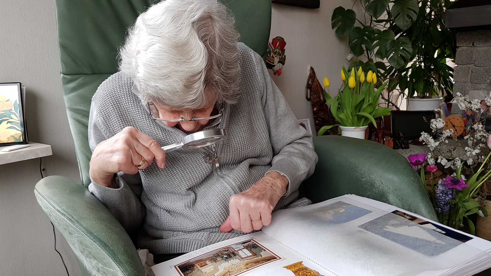

Unidad 1 Teleasistencia
1.3.- Características.

Hasta el momento, ya hemos aprendido que el Servicio de Teleasistencia es un servicio que se presta las 24 horas del día durante todos los días del año, de manera ininterrumpida, pero además de esta característica, es un servicio con unas características muy concretas que lo hacen tan idóneo y que debemos conocer:
- Es un servicio que se apoya en las nuevas tecnologías (sin ellas no sería posible).
- La prestación del servicio es a distancia.
- La asistencia recibida es, siempre que se demanda, de forma inmediata.
- Es totalmente compatible con la vida del individuo en su domicilio, mientras la persona lleva una vida normal y lo más autónoma posible.
- Presta al individuo una atención personalizada, conociendo en cada momento las circunstancias personales y familiares en las que se encuentra cada usuario.
- Es un servicio que puede ser complementario al servicio de ayuda a domicilio u otras prestaciones.
- No requiere amplios conocimientos tecnológicos por parte de los usuarios, pues el mecanismo de utilización es muy simple (solo hay que pulsar un botón).
- El servicio de Teleasistencia ofertado por las administraciones públicas es siempre subvencionado, ya sea parcial o totalmente gratuito (aunque pueden existir empresas de carácter privado que ofrecen servicios similares y que tengan un coste determinado para el usuario).
Obra publicada con Licencia Creative Commons Reconocimiento 4.0